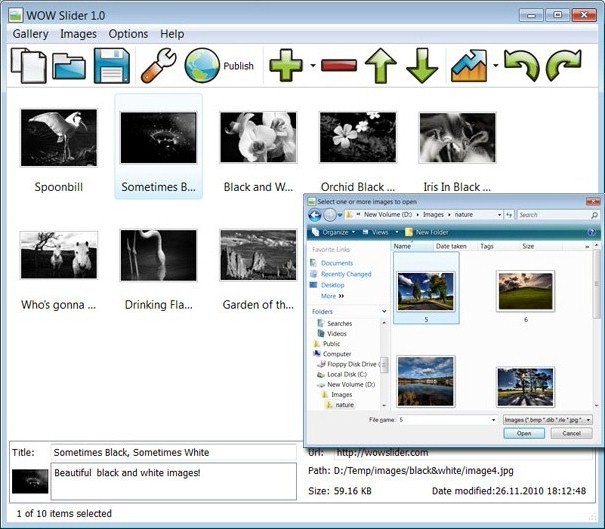

Overview
June 16, 2013 - Are you interested in presenting information on your website in a way that it will catch the attention of web browsers? jQuery slider maker has all the solution to your Jquery Slider Ajay needs.
jQuery Slider is a slideshow with stunning visual effects and tons of professionally made templates. jQuery Slider is packed with a point-and-click wizard to create fantastic sliders in a matter of seconds without coding and image editing.
More Info
JQuery provides you with the slider jquery video mpg best way to present information to your audience whether online or in an event. An application that has the capacity to meet all your need is the software application of jQuery image slider with text. This is an application that helps you in integration of both photos and text to form slideshows. With this application you can present paragraphs on your virtual slider jquery website in form of slideshows together with photos. The jquery slider window example days where photos and text occupied large amount of spaces on the web page are gone. With this jquery slideshow image slider new application you can save on space on your webpage. The application allows you to have multiple sets of slideshows on a single webpage for this reason the applications are widely used by e-business for advertisements.

If you want to give your website a slider jquery per aprire pagine glamorous look you can get these application softwares by downloading them on the internet. The jquery sliders banco de dados free jQuery slider with text come coded for those who want an best site gallery jquery slider already working applications. The jquery slider on close button only task that remains after downloading this application on the internet is to load in pictures ant text. After that the utilizzare jquery con slider task that follows is to post the slider jquery login page pictures on the internet via short codes. This jquery bildslider makes the applications to have a jquery slider probox good user interfuse prototype where the jquery slider animated html applications are tailored and comes with everything that you need. Also there are applications which are not coded, this is where you get the coding script from the jquery slider plugin beispiel internet and you get the jquery slider ajax for html pages chance to alter the codes so that they can meet your specific needs. Coding is easy as you do not have to design the codes the codes are already designed for you. All that is required is to duplicate the jquery slider js next page code and where necessary you may alter the codes.

JQuery slideshow maker also presents you with an application which is meant purely for making of text slideshow. This jquery slider html code application is known as the slideshow. The slideshows offer you an opportunity to presents text in a jquery slider html example manner that is captivating. The readers find it easy and attractive to read information presented in this form as the jquery slider plugin change users are given an jquery modal dialog slider example interface where they can flip through the script jquery slider and slider information backwards and forward.
If you want to present information on your abrir pagina en un slider jquery website that will bring advantage to your business incase you are involved on online business you should use jQuery applications. An slider effect jquery iframe application like jQuery slider with image and text has capacity to pull customers to your side. This is because it allows you to present information in an onload jquery popup slider demo organized manner. The way you present your information to the clients on the slider using jquery in rails website speaks volume. No one will want to hire the services of a company where the website appears disorganized. For better results in advertisement campaigns adapt to the jquery x slider app.
Have you ever wished to have an image slideshow that has what it takes to capture full attention of a slider examples in jquery person? If you have ever wished for that then your jquery slider a href quot http prayers has been answered by the jquery slider iphone replacement jQuery slideshow maker. With the introduction of jQuery image fade slideshow in the market you can now be able to create an image slideshow that you have ever wished for. This application software allows you to create a stunning and captivating slideshow that can catch attention of anyone even at a distance. The application comes with amazing features that enables you to create a jquery slider effet polaroid slideshow with fading effect. The slideshow created by this application are just perfect and amazing to the eyes. The slideshow create a sense of curiosity in a html in jquery slider person mind such that you want to find out which is the next image that will appear on the preview.
If you want your jquery slider imagenes en una bd activity of showcasing photo to turn up successful and splendid you should use this galeria foto jquery slider application of the jquery resim slider slideshow. The creations that are engineered by this application are just amazing to the slider conflict with jquery menus eyes of the slider de fotos em jquery creator and the intended audience. To use this application does not require you to be a html pagina in een jquery slider professional because the slider jquery php open swf application are downloaded are tailor made. All that is left is to fix in this application on your desktop, Imac or any other compatible device. Your work is to load in images on the application and slideshows with fade are generated automatically.

For those jquery contact form php slider who are intending to shows photos to relatives and friends in any even the way that will make the video con jquery slider experience unforgettable is for you to use jQuery photo fade slideshow in designing slideshows. The slider jquery pour mac en français application comes with customizing features to create the crear plugin slider jquery slideshow that meets your needs. The slider iframe jquery js application also comes with different animation effects that give each picture in the slider jquery con bordes slideshow a unique appearance. The application has an animation effect where each photo has a jquery slider manual add images unique fade in and out effect. This jquery slider for dreamweaver cs4 is the reason why many website are opting to use this application in advertisements of products and services.
In order to create a jQuery fading slideshow you will need to download the necessary image slider. The jquery slider for youtube sliders where you get to download this jquery slider html print software are tutorials which guide you on how to create the ljquery slider slideshow slideshows of your hot to run slider and jquery choice. The tutorials give and couch you on how to come up with different types of fading slideshows. Therefore to create the slideshows is an easy task where you are not required to be a professional in web designing or creation of slideshows. The slide gallery slider jquery sliders are of different types where each slider has a different fading effect. It’s only in jQuery slideshow maker where you get a jquery slider does not show nav chance to select a content slider jquery in joomla slider of your choice that meets your need of coming up with a spectacular image slideshow with the fading effects that your jquery slider german image desire. In order to be able to create an image slideshow that is captivating you should adopt applications which are offered from jQuery.
Make usage of your jquery slider having iframe website easier through slideshow maker. Are you interested in presenting information in a jquery galeria de fotos slider manner that is just perfect and amazing? JQuery slideshow maker presents you with application software that can be customized in the way you want. This jquery iframe slider wufoo use application is known as jQuery vertical slideshow it comes embedded with features that you can manipulate to meet your needs. This application is multipurpose it allows you to customize it to meet your need whether its jquery slider não funciona ajax for showcasing photos in an event or whether its jquery slider abrir na mesma tela for presenting information to your videobox slider jquery audience on the slider login jquery¨ website. If you want your event in which you intend to hold to be unforgettable showcase the photos and images using this application where you will give your change font jquery slider audience a jquery slider movie player chance to enjoy an video support slider jquery unforgettable moment. This is the galeria de fotos slider jquery application that appreciates beauty by offering a slider jquery warren perfect way to showcase the beauty. The technology of creating slideshow has been presented by different applications but none can match the jquery slider for text page html application that comes from jQuery slideshow maker.
The application from jQuery gives you a chance to present slideshows in a vertical or horizontal manner. This how to remove jquery slider is because the applications are highly customizable to meet the needs of the user. With the sliders from jQuery you can make vertical and horizontal slideshow. All that is needed is you to change the jquery div open slider settings of the jquery slider border around images applications. For those people who are using this application on the webpage they have the jquery slider volume chance to present slideshows either vertically or horizontally at the same time. This is the jquery content slider swf application that makes sure that your website is colourful and appealing to the user. The jquery slider plugin francais application also presents the jquery upload file slider users with an interface that is easier to use without too much task to perform. With jQuery information is presented automatically where scrolling has become a thing of the past. Information can now be presented in an php formulaire jquery slider organized manner that is captivating to the eyes.
Free Download
Slider Features
-
- Awesome and unique transitions
- Fancy templates
- jQuery powered
- No Flash required
- Lightweight (4-12Kb)
- Descriptions
- Prev/Next controls
- Bullet navigation
- Customizable speed, delay, size etc.
- Cross-browser compatibility
- Search engine friendly
- Clean and valid markup
Slider Wizard Features
-
- For Mac and Windows
- Drug-n-drop images
- Flickr or PhotoBucket support
- Easy tweaking of all parameters
- Built-in FTP client
- Visual insert-to-page
- 25 language interface
- Sort, rotate, resize images
- Add logo or watermark to slides
- Save/Open projects
Feedback
-
* I am thrilled with what this tool can do for me thanks for all the hard work that must have gone into it.
* I'd like to express my gratitude to your efforts on creating such a nice piece of program and best of all it's free! Keep out the good work and I hope to see new features in the near coming future to rate you 5 star!
* Just bought the business version of jQuery Image Slider and I just had to write and say how impressed I am with it. Really easy to use, intuitive interface and generates a truly professional presentation. Seldom have I been so pleased with a software purchase. Thank you.
jquery slider js html jquery div em slider pretty photo jquery slider clone jquery slider to oprn iframe jquery slider popular slider jquery indir slider jquery library smashing jquery plugin slider iframe jquery ajax loading slider ajax form jquery slider jquery image slider tut launch jquery slider from js jquery slider post form jquery slider show promo jquery slider zoom drag open google map in jquery slider slider jquery no funciona crear jquery slider jquery swfobject in slider slider jquery stackoverflow form contact jquery slider jquery forms slider conflito jquery js menu e slider slider jquery show flash imgs wordpress slider jquery flash slider jquery para dreamweaver cs4 jquery call slider onclick slider and jquery together jquery slider example which open hmtl a rel jquery slider jquery slider ajay jquery slider image movement slider x jquery jquery autosize slider slider jquery image preview strip jquery slider edition tutorial jquery slider with oben jquery slider jquery slider silder jquery slider in slideshow usar jquery slider sin a href jquery slider without click jquery slider overlay div jquery slider modal documentation slider jquery ie youtube pt use jquery for slider effect video jquery date picker slider jquery slider y flex builder slider jquery legende jquery slider anchor allow create slider with text jquery jquery slider ajay 1 * Are you tired from scrolling of information on sites waiting to load? You have the jquery slider image galleries chance to lose all these tuturial jquery slider problems by using vertical scrolling slideshow. The application allows you to scroll automatically to downwards pages automatically at the click of a button. Not only does this application provide you with an jquery slider roadtrip interface for scrolling it also boost the jquery slider for iframes appearance of your jquery slider keytoclose esc website. If you therefore want to create an attractive website that is easy to use adapt the jquery slider characteristics applications which are presented by jQuery slideshow maker an example being like this jquery slider plugin for form application of vertical sliders.
* For the jquery slider php html form people who are involved in film making jQuery has what it takes to make sure that their needs are fully satisfied. With application like this free jquery slider for user it has become possible to attach and showcase short films on the jquery slider print popup websites. This jquery slider ibox is an application that makes your movie advertisement to be a jquery slider div content success as using this jquery slider open asp application has the jquery slidershow automat capacity to attract attention. Therefore if you are intending to launch a new movie or show this is the application that you should use to catch the pirobox jquery slider example attention of people right from your website.